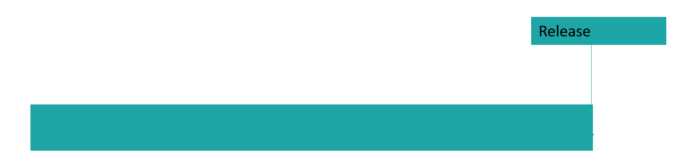
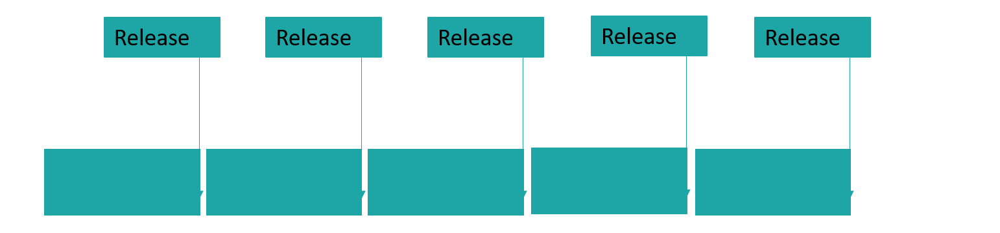

Softwareprozesse
Marcel Lüthi
Departement Mathematik und Informatik
Organisation von Aktivitäten

Zentrale Fragen:
- Wie lange sollen wir das tun?
- Was sollen wir als nächstes tun?
Software Prozessmodelle
Prozessmodelle:
- Bestimmen Aktivitäten
- Legen Ordnung und Beziehung zwischen Aktivitäten fest
- Definieren wann man zur nächsten Aktivität übergehen kann
Versuch, den Lebenszyklus zu organisieren.
Ziele von Prozessmodellen
- Standardisierung
- Vorhersagbarkeit
- Produktivität
- Hohe Produktqualität
- Planung von Zeit und Budget
Softwareprozess: Blackbox-Sicht

- Interaktion mit Benutzer nur am Anfang/Ende
- Nicht geeignet für Software.
- Fehler in Anforderungen werden erst am Ende entdeckt.
- Qualitätseigenschaften nicht von Endprodukt ableitbar.
Softwareprozess: Whitebox-Sicht

- Interaktion mit Benutzer in jeder Projektphase
- Eingehen auf Veränderungen möglich
Erster Ansatz: "Code and fix" Modell

- Probleme:
- Unmöglich Vorhersagen zu treffen
- Unmöglich zu managen
Schrittweiser Ansatz: Wasserfall Modell

- Stark strukturierter Prozess
- Dokumentlastig (Dokument nach jeder Phase)
- Prozess strukturiert und planbar
- Implementation erst wenn Anforderungen verstanden sind
Wasserfall Modell: Probleme
- Änderung in Anforderungen nicht berücksichtigt
- Kein Feedback zwischen den Phasen
- Keine Parallelisierung
- Fixes Einführungsdatum für ganzes System
- Originalpaper beschreibt diese Probleme
Royce, Winston W. "Managing the Development of Large Software Systems", Proceedings of IEEE WESCON 26 (August): 1–9.
Wasserfall Modell mit Feedback

- Feedback an vorherige Stufe oft nicht ausreichend.
V-Modell

- Wasserfallmodell mit Feedback über mehrere Stufen
Wasserfall Modell mit Prototyping

- (Throw-away) Prototyp um Anforderungen und Design zu verstehen/verifizieren
Spiralmodell

- Risikoabschätzung in jedem Durchlauf.
Wachstumsmodelle
- Grundidee: Gliederung in kleine, aufeinander aufbauende, betriebsfähige Releases
- System wird nicht konstruiert sondern wächst.


Wachstumsmodelle


Disziplin und gute Planung werden verlangt, damit es nicht zu Code and Fix Modell verkommt.